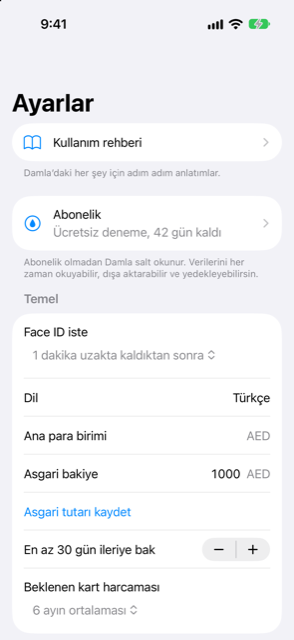

Kılavuz › Ayarlar, yedekleme ve gizlilik
Ayarlar, sayfa sayfa
Her şeyin Ayarlar'daki yeri.
Ayarlar günlük kontrolleri tutar: kilit, asgari bakiye, hatırlatıcılar, piyasa verileri, otomasyonlar ve yedekleriniz. Bu sayfa, yukarıdan aşağıya bir haritadır.

Ne zaman kullanılır
- Bir ayarın hangi sayfada olduğunu hatırlayamıyorsunuz.
- Bir sayfayı açmadan önce ne yaptığını öğrenmek istiyorsunuz.
Adım adım
- Bugün'ü açın ve sağ üstteki dişli simgesine dokunun. Bu, Ayarlar'ı açar.
- Bir satıra dokunarak o sayfayı açın; geri düğmesi sizi döndürür.
Sayfalar, yukarıdan aşağıya
Liste yukarıdan aşağıya Kullanım rehberi, Abonelik, bir Temel bölümü, ardından diğer sayfaların satırları şeklindedir.
Kullanım rehberi
Damla'daki her şey için adım adım öğreticiler. Bugün'deki kitap simgesi aynı rehberi açar.
Abonelik
Abonelik bu sayfada yer alır. Bkz. Ücretsiz deneme ve abonelik.
Temel
| Ayar | Ne yapar |
|---|---|
| Face ID iste | Her seferinde ya da 1, 5 veya 15 dakikalık ayrılıktan sonra. |
| Ana para birimi | Her şeyin toplandığı para birimi. Buradan değiştirilemez. |
| Asgari bakiye | Dokunmadan tutmak istediğiniz tutar. Girin ve Asgari tutarı kaydet'e dokunun. |
| En az … güne bak | Bir sonraki geliriniz daha yakında gelse bile tahminin ne kadar ileriye baktığı. 0'dan 90 güne, 5 günlük adımlarla. |
| Beklenen kart harcaması | Kapalı ya da 3, 6 veya 12 aylık ortalama; henüz kesilmemiş ekstreler için kart faturalarını doldurur. Bir ekstre kesildiğinde gerçek tutarı devreye girer. |
Güvenle harcanabilir tutar, en düşük noktanızda asgarinin üzerinde kalan miktardır; bu yüzden asgari bakiye ve ileriye bakma süresi ikisi de onu değiştirir.
Hatırlatıcılar
- Vadesi gelmeden önce bana haber ver: vadesi gelmiş ama henüz kaydedilmemiş faturalar, gelirler ve kart faturaları için bir gün önce ve günü gününe bir bildirim. Saati siz seçersiniz, 06:00 ile 22:00 arasında.
- Bakiyem asgari tutarın altına düşebilecekse beni uyar: tek bir bildirim, verilerinizden bu telefonda hesaplanır.
iPhone'un Ayarları'ndan Damla için bildirimleri kapatmışsanız, burada bir satır bunu söyler.
Para birimleri ve fiyatlar
- Piyasa verileri: Döviz kurlarını günlük güncelle ve Varlıklar için fiyat sorgula seçeneklerini açın ya da hemen çekmek için Şimdi yenile'ye dokunun. Manuel yenileme her zaman kurları dener; fiyatlar yalnızca o anahtar açıksa çekilir. Bir yenilemeden sonra, hangi kaynağın neyi güncellediğini, atladığını veya başaramadığını gösteren bir rapor çıkar. Satırlar her kaynağın en son ne zaman güncellendiğini gösterir.
- Başka para biriminde kart alışverişleri: Damla'nın tahmin ettiği banka marjı (boş bırakılırsa %2,5) ve mesajlarınızda "DH" ve "DHS" gibi kısa para birimi kelimelerini nasıl okuyacağı — ana para biriminiz olarak, ya da AED veya MAD olarak.
- Döviz kurları: kullandığınız her para birimi için bir satır; yürürlükteki kur, çekilmiş mi yoksa sizin mi olduğunuz ve tarihi. Kendi kürünüzü yazabilirsiniz.
- Semboller: her varlık için bir satır, fiyatını çekmek için.
Her iki sorgu da isteğe bağlıdır ve uygulama çevrimdışı çalışır. Ayrıntılar: Fiyatlar ve döviz kurları.
Kategoriler
Kategori ekleyin, yeniden adlandırın veya kaldırın. Ayrıntılar: Alıcılar ve kategoriler.
Banka mesajları ve ekstreler
- Otomasyonlar (Kısayollar): bankanızın mesajlarının, e-postalarının ve Wallet ödemelerinin Damla'ya ulaşma yolu ve her otomasyonun adımları.
- Son bildirimler: Damla'nın kendisine ulaşan mesajlarla ne yaptığı ve birini nereden geri alacağınız. Bkz. Damla'nın yok saydıkları ve bir uyarıyı geri almak.
- Ekstre parolaları: Damla'nın kilitli ekstre PDF'leri için sakladığı parolalar; bu telefonun Keychain'inde. Kayıtlı … parolayı unut bunları siler; hiçbiri kayıtlı değilken bölüm Kayıtlı ekstre parolası yok. der. Bunlar telefonu asla terk etmez ve yedeklerde yer almaz.
Yedekleme ve verileriniz
- Otomatik yedekleme: günde bir kez, Damla'dan ayrıldığınızda, şifreli bir kopya seçtiğiniz bir klasöre gider. En yeni 7 tanesi tutulur.
- İşlemleri dışa aktar: tüm işlemlerin bir CSV'si; tüm yıllar ya da seçtiğiniz tek yıl için. CSV dosyası oluştur'a dokunun, sonra kaydetmek veya göndermek için Paylaş'a dokunun.
- Şifreli yedek dışa aktar: en az 8 karakterlik bir parola cümlesiyle şifrelenmiş bir dosya. Parola cümlesini güvende tutun.
- Yedekten geri yükle: dosyayı seçin, parola cümlesini girin. Bu telefondaki tüm verilerin yerini alır.
- Aile: Aile için görüntü oluştur, bugünün sayılarının salt okunur bir görüntüsünü yaratır; diğer kişiye söyleyeceğiniz bir parola cümlesiyle şifrelenir. Diğer kişi bunu kendi telefonundaki Damla'da açar; güncellenmez.
- Tüm verileri sil bu telefondaki her şeyi siler. Geri alınamaz: ihtiyacınız olabilir diye düşünüyorsanız önce bir yedek dışa aktarın.
Kurulum rehberi
Kurulum rehberini yeniden başlatır, böylece ilk seferde atladığınız her şeyi tamamlayabilirsiniz.
Bilmekte fayda var
İlgili
- Yedekleme ve geri yükleme
- Dışa aktarma ve aile görüntüsü
- Otomatik yakalama nasıl çalışır
- Ücretsiz deneme ve abonelik
Anlaşılmayan ya da eksik bir şey mi var? support@raveniq.ai adresine yazın ve hangi sayfa olduğunu belirtin.